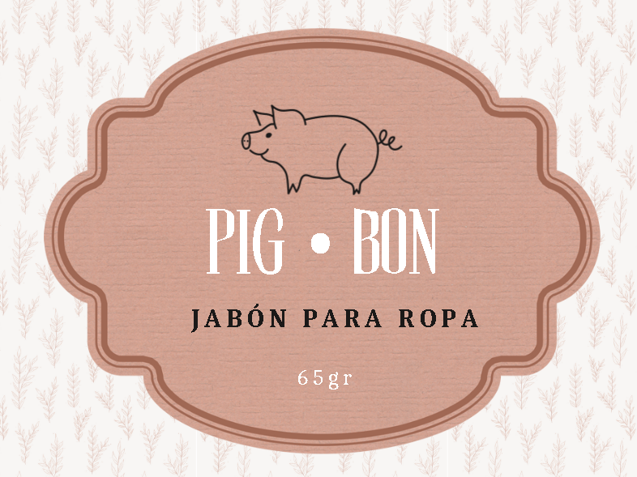
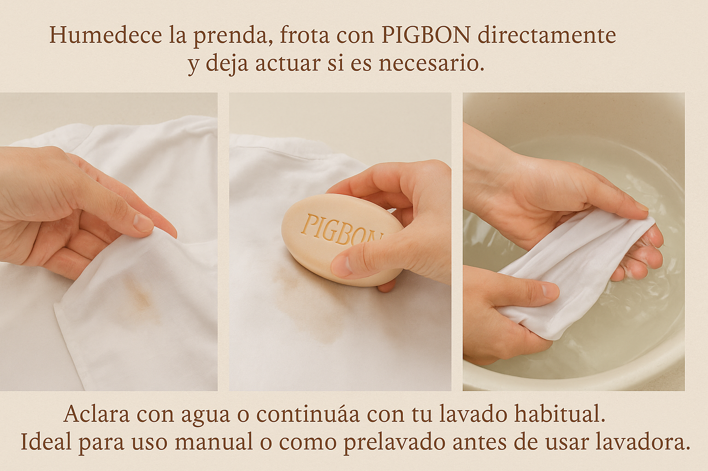

Poder natural para una limpieza profunda
En el corazón de PIGBON se encuentran tres pilares: responsabilidad, rescate de saberes tradicionales y compromiso con la sostenibilidad.
Nuestra esencia nace del deseo de transformar lo común en algo valioso. De demostrar que la agroindustria no es solo maquinaria, sino también creatividad, conciencia y conexión con la tierra y sus ciclos. En un mundo saturado de productos sintéticos, nosotros decidimos volver a lo esencial.
Con PIGBON, proponemos una forma diferente de consumir. Una que respeta, reutiliza, y a la vez, recuerda de dónde venimos. Porque limpiar una prenda también puede ser un acto de responsabilidad.
La historia de PIGBON empieza con una conversación. Durante las clases del curso de Zootecnia, mientras hablábamos del aprovechamiento del cerdo, surgió una duda: ¿Y qué pasa con la manteca?
A partir de allí, el interés técnico se mezcló con la memoria familiar. Recordamos a nuestras abuelas y madres elaborando jabones caseros con los pocos recursos disponibles. Esa combinación entre conocimiento académico y tradición fue el punto de partida.
Cinco estudiantes decidimos asumir el reto de crear un producto con impacto real, utilizando lo que normalmente es descartado. Con cada prueba en el laboratorio, con cada barra moldeada a mano, nació algo más que un jabón: nació una propuesta agroindustrial con rostro humano.
PIGBON es un jabón artesanal sólido para ropa, hecho únicamente con manteca de cerdo, sosa cáustica y agua. Sin aditivos, sin perfumes, sin envolturas plásticas ni componentes industriales. Solo lo necesario para una limpieza profunda, efectiva y respetuosa con la piel y el ambiente.
Este jabón se elabora bajo un proceso de saponificación en frío que permite conservar las propiedades limpiadoras de la grasa, logrando un producto de alta calidad y duración.
Cada pieza es única. Ninguna barra es exactamente igual a otra, y eso también forma parte de su esencia.
Elegir PIGBON es elegir un producto con beneficios reales y comprometido con el entorno:
Humedece la prenda, frota con PIGBON directamente y deja actuar si es necesario. Aclara con agua o continúa con tu lavado habitual. Ideal para uso manual o como prelavado antes de usar lavadora.
“Más que un jabón, una forma de reconectar con lo simple, lo útil y lo nuestro.”
No recomendado para: prendas delicadas como seda, encaje o lana fina.
Cada barra de PIGBON pasa por un cuidadoso proceso de saponificación en frío, que requiere precisión, higiene y paciencia. Este método no requiere calor externo y mantiene la integridad de los ingredientes naturales, a la vez que reduce el gasto energético.
El jabón se deja curar por varias semanas, tiempo necesario para que pierda la alcalinidad residual y alcance su punto óptimo de dureza y rendimiento.
El control del pH, la textura, la forma y el secado son realizados de forma manual, con seguimiento académico y bajo criterios técnicos adquiridos durante nuestra formación profesional.
Crear PIGBON nos ha enseñado mucho más que hacer jabón. Aprendimos sobre química aplicada, desarrollo de productos, economía circular, diseño de marca, trabajo en equipo y resiliencia.
Cada prueba fallida fue una oportunidad de mejora. Cada barra entregada, una dosis de confianza. Y cada comentario recibido, una motivación para seguir adelante.
Este proyecto nos ha acercado más al verdadero sentido de nuestra carrera: Usar el conocimiento para transformar realidades.
PIGBON no se detiene aquí. Queremos seguir creciendo y llevar este producto a más hogares, más ferias y más regiones. Nuestros próximos pasos incluyen:
Soñamos con que PIGBON se convierta en un símbolo de lo que la universidad pública y la agroindustria peruana pueden lograr juntas.
Gracias por visitar mi página.